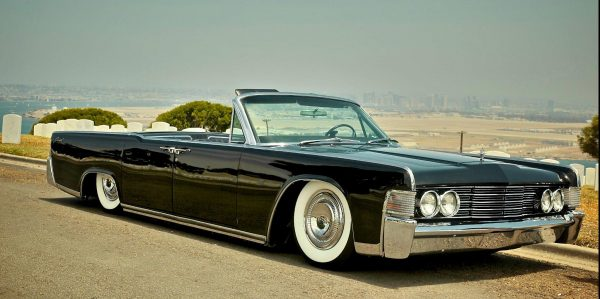

This is arguably one of the most gangster cars ever produced, and it comes with some of the sexiest lines in the Lincoln lineup to date. To highlight this fact, notice the factory suicide doors, which make entering this vehicle like stepping through the velvet ropes of a plush and luxurious theater. The fourth generation Continental came with a 7.0L V8 before 1966, when a 7.6L variant became available. The name of the game with the Continental was unrivaled luxury, which meant that this car would be one of the heaviest, floatiest, best-handling cars of its time with one of the smoothest rides around. Customizing a restored version is also a ton of fun, and these cars can be made to look seriously mean. Parts shouldn’t be hard to find, though pricing may not be exactly affordable, either. That said, this could easily turn out to be one of the most rewarding car restoration projects you’ll ever take on.
